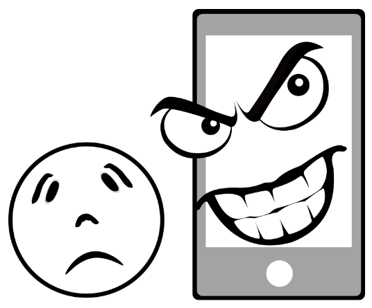

Es un tipo de folleto que tiene dos dobleces que divide la hoja en tres secciones en las que se puede agregar información, imágenes o una combinación de ambos.
Ejemplo
He leído el tríptico con la información sobre la matrícula.
¿Qué tal? Ya has empezado, espero que tengas ganas de seguir porque vienen cosas muy interesantes.
Tienes por delante un reto de gran importancia y ya va siendo hora de que empieces a centrarte en él.
Para ello te propongo que vayas viendo algunas cuestiones previas relacionadas con la ciberseguridad, las amenazas que suponen las redes sociales y algo sobre los derechos de autor y las licencias de uso.
No te preocupes si crees que aún no estás preparado, tan solo es una forma de que te des cuenta de lo que hay que aprender, así que ¡a trabajar!
1. Tengo miedo
Colocaros en grupos de 2 personas.
En vuestro Cuaderno de Clase poned qué amenazas de Internet creéis que es más probable que os puedan afectar y qué efectos podrían tener para vuestra seguridad.
En ese documento podéis expresar vuestra propuesta de la forma que creáis más conveniente:
En forma de tabla.
Mediante un esquema.
Un simple texto.
Usar dibujos solos o complementados con texto.
O como se os ocurra.
Haced un esfuerzo antes de visualizar las siguientes partes de esta lección, que os van a ser de gran ayuda, pero os pido por favor, que primero lo trabajéis vosotros.
2. Hoy toca examen
En el siguiente enlace puedes encontrar varios tests sobre ciberseguridad.
Realiza los que te indico a continuación para evaluar tú mismo cuáles son tus conocimientos previos sobre este tema:
Mitos sobre seguridad en Internet ¿verdaderos o falsos?
¿Eres nuevo en ciberseguridad?
¿Están seguras tus cuentas e información?
¿Compras por Internet sin que te den ‘gato por liebre’?
En tu cuaderno de claseescribe las preguntas que has fallado y el motivo por el que no sabías la respuesta correcta.
¡¡Nos paramos!!
Vamos ahora a revisar todos juntos estos test que acabamos de realizar para revisar todos lo fallos que habéis tenido y aclarar vuestras dudas y conceptos erróneos.
3. Ese no puedo ser yo
En pareja vais a pensar en lo siguiente:
Cuántas formas se os ocurren para ser suplantados en la Red.
Qué consecuencias podría tener este tipo de actos en vuestras vidas.
Cómo se podría actuar en esos casos.
Si conocéis algún caso preparaos para contarlo.
Cuando hayáis terminado de organizar vuestras ideas, vais a debatir con el resto de la clase vuestras conclusiones para ver qué ideas surgen de la interacción con el grupo. Tomad nota de aquello que creáis que es más interesante.
Suplantación de identidad
La suplantación de la identidad consiste en hacerse pasar por otra persona o entidad para crear daño u obtener un provecho ilegalmente.
Identidad
La identidad digital es el conjunto de informaciones publicadas sobre una persona, accesibles, por tanto, a los demás.
Esta identidad tiene dos componentes principales:
Uno individual que recoge la visión que aporta sobre sí misma esa persona y todas las acciones que realiza en la Red
Otro social aportado por la visión de otras personas y la interacción con ellas.
Si quieres tener aún más claro qué es la identidad digital, presta atención al contenido del siguiente vídeo:
¿Para qué?
Aunque la suplantación de identidad puede perseguir objetivos muy variados, que van desde el robo de información mediante fraudes y engaños hasta el acoso o el chantaje en cualquiera de sus formas, en realidad se lleva a cabo de dos maneras principalmente:
La primera consiste en el acceso a cuentas personales existentes sin permiso, pudiendo llegar a apropiarse de ellas.
La segunda se basa en la creación de perfiles falsos, que, en muchos casos, imitan los pertenecientes a una persona o entidad.
Ambos casos requieren de la recolección o del robo de información para poderlos llevar a cabo, por lo que las medidas de protección contra este tipo de riesgos pasan por el control y aseguramiento de los datos importantes además de la confirmación de la validez de los perfiles con los que se interactúe.
¿Cómo saberlo?
Para saber si te han suplantado la identidad de alguna forma puedes tener en cuenta lo siguiente:
Realizar una búsqueda general con datos de tus perfiles para detectar coincidencias.
Descubrir algo fuera de lo normal en alguna de las cuentas que utilizas.
Que tus contactos reciban algún mensaje que tú no has enviado.
Detectar algún cambio en los juegos online en los que participes.
Sufrir la activación o desactivación de algún servicio sin que tú lo hayas pedido.
Incluso puedes usar algún servicio de rastreo de imágenes en internet para ver si alguna foto tuya se está utilizando sin tu consentimiento. Una opción gratuita para hacerlo, si no la utilizas con fines comerciales, es TinEye.
¿Qué hago?
¿Qué puedes hacer una vez que ha ocurrido?
Algunas medidas que puedes tomar en esos casos son las siguientes:
Las redes sociales y los servicios de las grandes plataformas digitales tienen determinadas herramientas para poder eliminar las actuaciones de suplantación, por lo que te puedes dirigir a ellas para solicitar la eliminación de los contenidos afectados. Como ejemplo te dejo este enlace en el que dispones de información para denunciar una infracción que incluye la suplantación de identidad entre otras varias.
Si fuera necesario, puedes iniciar acciones judiciales en base a la vulneración del derecho a nuestra propia imagen ya que en estos casos se utilizan tu nombre y tus fotografías entre otros datos personales.
También se puede contar con las autoridades policiales para poner fin a este tipo de conductas mediante su denuncia. En este enlace tienes información al respecto.
¿Quieres más información?
Si quieres más información acerca de la suplantación de identidad en Internet puedes consultar este enlace que te llevará a una entrada muy interesante del blog de la oficina de seguridad del internauta (OSI).
4. ¿Esto de qué va?

Reuniros en grupos de al menos 5 personas.
Contad casos que penséis que puedan ser ejemplos de un acoso a través de las redes y centraros en los siguientes aspectos:
¿Por qué creéis que se trata de un acoso y no de otra situación?
En vuestra opinión ¿Se pueden establecer distintos tipos de acoso en la Red?
¿Qué tienen en común?
¿Qué consecuencias pueden tener para las personas involucradas?
¿Cómo creéis que se puede evitar?
Cuando hayáis contestado a estas preguntas entre vosotros, presentad conclusiones de forma resumida en vuestro Cuaderno de Clase
Motus dice ¡Perfecto!
Trabajar en grupo no solo es una ayuda si no que también aporta recursos adicionales a la hora de hacer cualquier cosa. Mejor acompañado porque todo compartido queda mejor.
Cuando trabajas en grupo aprendes también en equipo. Hay quien está pendiente de los detalles para que nada se olvide, hay quien sabe expresarse muy bien, hay quien tiene muchas habilidades, o dibujan estupendamente…
Cada cual tiene superpoderes muy útiles para trabajar. Por separado son muy útiles e incluso destacan puntualmente, pero cuando se unen, aparece su máximo efecto y ya nada parece imposible. De esta forma no solo aprendes si no que tienes la garantía de conseguir resolver cualquier desafío.
La unión hace la fuerza y por eso es importante que en tu equipo sigáis estos consejos:
Todo lo que una persona sabe lo comparte con los demás.
Colaboramos en las tareas para que el equipo funcione.
Valoramos los superpoderes de cada persona.
Respetamos lo que cada persona ofrece al equipo.
¡Aprendiendo en grupo se puede conseguir más!
En definitiva, esto es ACOSO
Existen diversas formas de acoso que se han llevado al ámbito virtual utilizando de forma negativa las inmensas posibilidades de conexión que ofrece Internet. Esta manera de acosar recibe el nombre de ciberacoso.
El hecho de que actualmente se accede al mundo digital cada vez a más temprana edad, unido a la falta de conocimientos suficientes y al reducido control por parte de los adultos responsables, ha contribuido al surgimiento de amenazas como las que se describen a continuación.
Ciberbullying
El ciberbullying, en definitiva, es el acoso a través de entornos digitales.
Dependiendo de las fuentes que consultes, hay quien diferencia ciberbullying de ciberacoso según el ámbito en el que se produce, siendo exclusivamente el escolar en el primer caso y cualquier otro en el segundo. Pero sea como fuere, el resultado es similar. Hay una víctima a la que están dañando continuamente una o varias personas, identificadas o anónimas, ya que el entorno digital a diferencia del físico puede conllevar que no se conozca al atacante.
En los siguientes vídeos vas a poder obtener algunos datos más concretos de este tipo de amenaza para que sepas qué es y cómo se podría evitar.
Sexting y sextorsión
En realidad el sexting no es más que el intercambio libre, voluntario y sin que medie engaño o suplantación de identidad, de mensajes, imágenes o vídeos de carácter sexual utilizando un entorno digital.
El problema viene cuando se utiliza ese contenido para amenazar con difundirlo si no se accede a cumplir unas condiciones impuestas. En ese caso se denomina sextorsión y es una amenaza muy grave.
También puede ser una fuente de ciberacoso cuando se difunde malintencionadamente ese contenido con el objetivo de dañar a la víctima pero sin que medie chantaje alguno.
Grooming
El grooming es el acoso sexual a un menor de edad a través de medios digitales en un entorno virtual.
Normalmente conlleva una suplantación de identidad por parte del acosador para poder ganarse más fácilmente la confianza del menor y obtener de éste imágenes o vídeos con contenido sexual que luego utilizará para chantajearlo. Así podrá obtener más contenidos de carácter sexual o incluso forzarlo a encuentros reales para pasar al abuso físico.
En el siguiente vídeo se explica claramente.
Las apariencias engañan
En pareja, tenéis que ver el siguiente vídeo y prestar mucha atención a lo que ocurre.
Ahora es el momento de que contestéis,por escrito en vuestro cuaderno, a las siguientes preguntas acerca de lo que habéis podido ver en el vídeo.
Describid qué es lo que está ocurriendo. ¿Cómo creéis que ha sucedido? ¿Por qué ha sucedido? ¿Quiénes son los personajes? ¿Qué creéis que pasará a continuación? ¿Cómo se podría haber evitado? Ahora que se ha producido ¿Tiene solución? ¿Cuál? ¿Qué nombre recibe este tipo de relaciones? ¿Qué características tiene? ¿Pensáis que es un problema común? ¿Por qué? ¿Conocéis o sabéis de alguien a quien le haya pasado algo similar? Contadlo.
5. ¡Qué bonito es el amor!
Colaborando en pequeños grupos, valorad por escrito, en vuestro cuaderno, qué opinión tenéis acerca de los siguientes comentarios de una relación de pareja que se reflejan en las siguientes frases.
Posteriormente podéis pornerlas en común en un debate con toda la clase.
Frase 1
Te quiero tanto que no me gustaría compartirte con nadie.
Quiero que siempre estemos juntos, no nos hace falta nadie más, ni amistades ni familia.
Frase 2
Deberías cambiar tu foto de perfil porque me parece un poco atrevida y otra gente podría llamarle la atención y despertar mis celos.
Frase 3
Si de verdad me quieres, dame las contraseñas de tus cuentas en las redes. Nuestra relación debe estar basada en una confianza mutua.
Frase 4
Si es verdad que anoche no saliste demuéstralo, vamos a verlo en el historial de ubicaciones.
Frase 5
Tienes mucha gente siguiéndote de la que no me fío ni un pelo. Deberías cortar y no volver a mandarles ningún tipo de mensaje. Plantéate borrarte la cuenta. Estaremos mejor y tendremos más tranquilidad.
Frase 6
¿No te parece que las fotos que estás compartiendo son un poco atrevidas?
Frase 7
¿Me puedes explicar por qué esa persona te da tantos likes?
Frase 8
Los comentarios que estás compartiendo despiertan mis celos.
Frase 9
Me quieres explicar qué hacías ayer a las cuatro de la mañana. He visto lo que has escrito.
Frase 10
Oye ¿Por qué sigues a esta persona? Me lo puedes explicar, no me gusta nada.
Frase 11
Si no tienes nada que ocultar enséñame el móvil.
Frase 12
Seguro que estás con tus amistades donde dices, pero mándame una foto a ver.
Cibercontrol
El auge de las nuevas tecnologías también ha traído consigo una nueva forma de VIOLENCIA en la relación de pareja conocida como CIBERCONTROL.
El cibercontrol no es otra cosas que un control abusivo que ejerce un miembro de la pareja sobre el otro para reducir sus libertades fundamentales, de movimientos, relación con otras personas o expresión.
En el siguiente vídeo puedes obtener más información acerca de esta amenaza.
¿Sabías que?
Sabías que la violencia en pareja a través de las nuevas tecnologías también se conoce como “cibertdating abuse”.
Si quieres profundizar sobre el tema quizás te venga bien saberlo.
Tu opinión cuenta
Debatid entre toda la clase acerca del cibercontrol.
Para ello podéis dar respuesta a preguntas como las siguientes:
¿Qué opinas de las manifestaciones de cibercontrol que has visto en el vídeo? ¿Crees que es exagerado? ¿Por qué?
¿Qué podrías hacer en caso de ser víctima de esta amenaza?
¿Cómo crees que se podrían eliminar esas conductas?
¿Conoces algún caso real, aunque no sea muy grave? ¿Qué han hecho sus protagonistas? ¿Por qué crees que han actuado así? ¿Qué habrías hecho tú en su lugar? ¿Por qué?
Apunta tus conclusiones en el Cuaderno de Clase
6. Estoy atrapado
En pareja contestad a las siguientes preguntas y apuntadlo en el Cuaderno de Clase:
¿Qué es ser adicto a algo?
¿Se puede ser adicto a Internet? ¿Cómo?
¿Cuáles crees que son los síntomas que indican que una persona tiene un problema de dependencia de Internet, las Redes o el móvil?
¿Cuáles crees que son las causas de que aumente este problema cada día?
¿Qué consecuencias puede tener para un adolescente este tipo de adicción?
¿Tiene solución? ¿Cuál?
¿Crees que es fácil desengancharse? ¿Por qué?
Adicción
El abuso en la utilización de los aparatos electrónicos y servicios de Internet te puede conducir a una situación de dependencia de los mismos.
Debes pensar que ninguna adicción es buena y todas tienen consecuencias negativas en la salud tanto física como mental.
Los móviles son unos de los principales dispositivos que permiten la convivencia continua con las nuevas tecnologías y, a pesar de lo útiles que son, también representan una fuente de numerosos conflictos y problemas entre jóvenes de tu edad, entre los que se encuentran las adicciones a las redes o los juegos.
En el siguiente vídeo puedes encontrar una descripción de algunas de las principales consecuencias de ser adicto al móvil.
Solo son sospechas
Aquí tenéis un enlace a un test que valora de forma rápida si hay indicios de sufrir una adicción a las nuevas tecnologías.
En pareja haced el test y tras revisar las indicaciones de los resultados que habéis sacado, apuntad en vuestro Cuaderno de Clase vuestras reflexiones y meditar el porqué habéis obtenido esos resultados y de si tienen algún tipo de consecuencia en vuestra vida.
7. Demuestra cómo se comporta una persona
Realizar este ejercicio en grupos de al menos 5 personas
Aportar ejemplos de mal comportamiento de algunas personas a la hora de relacionarse a través de la Red y acompañadlos de las normas que creéis que contribuirían a evitarlos.
Incluye como mínimo tres comportamientos no deseables
¡¡¡Compórtate!!!
La relaciones sociales virtuales, como las físicas, también deben respetar una serie de normas de buena conducta y educación. Al conjunto de estas normas de educación, para comportarse correctamente en la Red, se les denomina netiqueta.
En el siguiente vídeo se describe las principales normas de netiqueta que han de respetarse en el uso de Internet.
Poniendo límites
Juntaros en pareja.
Elaborad una relación en la que expongáis brevemente las 10 normas principales de la netiqueta a la hora de regular la comunicación e interacción de los usuarios de Internet.
Añadidle imágenes a cada norma y dadle un aspecto atractivo.
¿No se os ocurre nada?
Si tenéis problemas para elaborar vuestra lista, os recuerdo que en el vídeo que podéis encontrar en el apartado anterior ( ¡Compórtate!) tenéis una amplia relación de normas para escoger las que creáis más importantes.


.png "Stop troll")